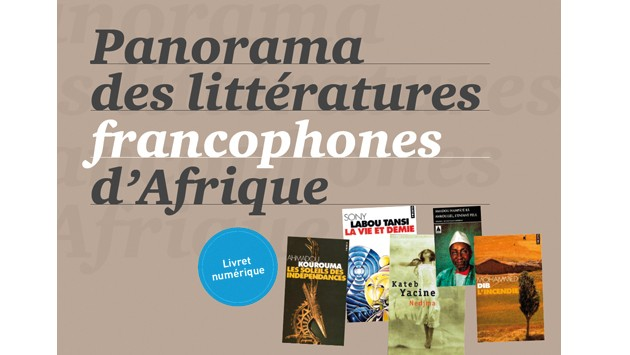

A la rencontre de l'Afrique
- ACCUEIL
- Qui sommes-nous
- SÉJOURS
- PÉRIPLES
- LIBRAIRIE
- Découverte
- TÉMOIGNAGES

Née au siècle dernier, dans le creuset de la littérature coloniale et ethnologique, la littérature africaine d’expression française a très tôt affirmé son indépendance vis-à-vis de ses modèles coloniaux, en arrimant solidement ses productions aux préoccupations et revendications du peuple africain dominé et en créant ses propres institutions. Ses premiers poètes et romanciers ont pour noms René Maran, Léopold Sédar Senghor, Camara Laye, Sembène Ousmane...
La littérature africaine subsaharienne d’expression française est née au début du XXe siècle, dans la période de l’Entre-deux guerres, avec des romans comme Les Trois volontés de Malic (1920) du Sénégalais Amadou Mapaté Diagne, Batouala (1921) du Guyanais René Maran, Force-Bonté (1920) du Sénégalais Bakary Diallo et L’Esclave (1929) par Félix Couchoro, un instituteur togolais.